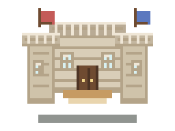
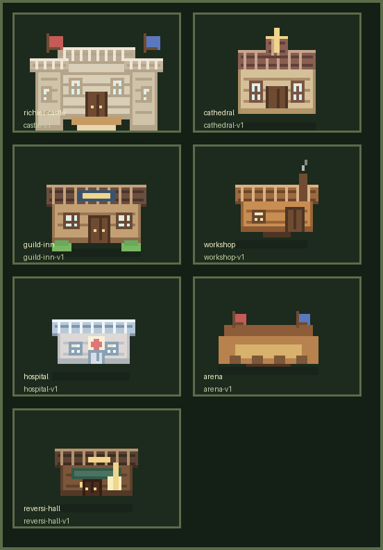

里谢里雅城

做成了 chibi 化的王城比例，保留左右塔楼、中央拱门和双旗。


做成了 chibi 化的王城比例，保留左右塔楼、中央拱门和双旗。
重点是十字、暖色石墙和更竖向的宗教感。
走《星露谷》味道更重一点的暖色旅店风，想让它看起来有人气。
加了烟囱和更厚的木结构，偏工匠街区。
白蓝墙面和红十字更清楚，方便在地图上远看识别。
不是封闭建筑，而是偏看台入口式的简化竞技场门面。
延续我们现在会馆的深木色和绿招牌，但做得更像单独的像素建筑。